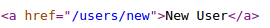
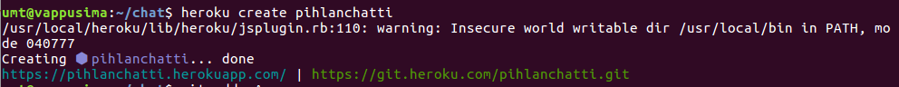

Oletetaan että sinulla on nyt Rails asennettuna (löytyy atkin koneilta esimerkiksi). Luo komentoriviltä uusi sovellus kirjoittamalla kotihakemistossasi
rails new chat
Tämän jälkeen asenna jokin tekstieditori, mieluiten sellainen jolla on helppo käsitellä useita tiedostoja samaan aikaan, esimerkiksi Sublime Text . Avaa kotihakemistoosi ilmestynyt chat -kansio tekstieditorilla. Huomaat että sinne on generoitu paljon erilaisia kansioita ja tiedostoja. Rails perustuu tiedostojen automaattigeneroinnille niin, että itse ohjelmointi olisi mahdollisimman helppoa. Tässä vaiheessa ei ole tärkeää tietää jokaisen tiedoston merkitystä, sillä tutustumme jokaiseen tarpeelliseen osaan kerrallaan.
Rails perustuu Model-View-Controller- eli MVC-arkkitehtuuriin. Modelit ovat luokkia, joista luodaan olioita ja jotka tallettavat ja hakevat tietoa tietokannasta. Viewit ovat ihmiselle näkyvä osa. Controllerit yhdistävät Modelit ja Viewit. Modelit ovat .rb-päätteisiä ruby-luokkia. Tässä materiaalissa oletetaan että olet tutustunut jo esimerkiksi Javan olioihin. Railsin Modeleiden oliot tallennetaan tietokantaan automaattisesti ActiveRecord -nimisen systeemin kautta. Activerecord siis yhdistää tietokannan rivit olioiksi niin, ettei ohjelmoijan tarvitse kirjoittaa monimutkaisia SQL-lauseita. Riittää kun osaa käyttää olioita.
Controllerit huolehtivat tiedonkulusta Modeleiden ja Viewien välillä. Modelit ja Viewit kun ovat täysin erilaisia asioita, Modelit luokkia ja Viewit .html.erb -tiedostoja. Html-erb-päätteinen tiedosto on html-tiedosto, jonka sisällä on <% %> -tageissa Ruby-koodia ja jota Rails osaa tulkita. Rails tekee html.erb-tiedostoista html-tiedostoja ohjelman suorittamisessa. Esimerkiksi koodi
<%= link_to 'New User', new_user_path %>
näkyy sivulla selaimessa vieraillessa sourcekoodia tutkittaessa koodina

Luodaan ensimmäinen model, controller ja view kaikki yhdellä kertaa kirjoittamalla chat-hakemistossa komentorivillä
rails g scaffold User name:string
Scaffold luo Userille model-, controller- ja view-tiedostoja. Sen jälkeen komennolla
rake db:migrate
ajetaan tietokantamigraatiot eli se luo User-taulun tietokantaamme. Sen jälkeen lisää config/routes.rb -tiedostoon rivi joka asettaa kaikki käyttäjät listaavan sivun juureksi:
root 'users#index'
Nyt kun käynnistät sovelluksen chat-hakemistosta komennolla
rails s
niin osoitteessa localhost:3000 sinulla pitäisi olla sovellus.
Tehtävä: Tutki sovellustasi selaimessa, erityisesti Useriin liittyviä toiminnallisuuksia. Scaffold-komento nimittäin loi esimerkiksi mahdollisuuden luoda uusi käyttäjä, näyttää sen tiedot sekä tuhota käyttäjä. Testaa sovellustasi.
Model tiedostossa app/models/user.rb on tyhjä luokka. Se kuitenkin perii ActiveRecord::Base -luokan eli sen käytössä on esimerkiksi konstruktori ja attribuuttien setterit ja getterit, jotka hakevat ja asettavat arvoja suoraan tietokantaan. Kokeillaan näitä ominaisuuksia Railsin komentoriviltä
rails c
Luodaan uusi User Railsin komentorivillä komennolla
user1 = User.new name:"nimi"
Huomataan että tämä ei anna user1:ille id:tä ja komentorivi kertoo sen id:n olevan nil. Id on luku, joka annetaan jokaiselle tietokantaan talletettavalle oliolle, ja saman luokan toisella oliolla ei saa olla samaa id:tä. Id:tä käytetään myöhemmin olion tietoja tietokannasta haettaessa. User1 saa id:n vasta kun se tallennetaan tietokantaan komennolla
user1.save!
Nyt saamme tietää u:n id:n komennolla
user1.id
Uuden olion luonnin ja tallettamisen tietokantaan voi tehdä helpomminkin. Komento
user2 = User.create name:"nimi2"
luo uuden Userin jonka nimi on nimi2, ja tallettaa sen tietokantaan. Nyt tarkista vielä user2:n id, se pitäisi olla yhtä suurempi kuin aiemman talletetun olion id.
Ennen sovelluksen nettiin laittamista täytyy määritellä tuotantotietokannaksi Postgresql, sillä Heroku ei tue SQlite -tietokantaa. Vaihda Gemfile-tiedoston rivi
gem 'sqlite3'
riveiksi
group :development, :test do
gem 'sqlite3'
end
group :production do
gem 'pg'
end
Siirrämme sovelluksen nyt nettiin Heroku-palveluun. Luo Herokuun tunnus täältä. Asenna Heroku Toolbelt eli Herokun komentorivikäyttöliittymä täältä. Kirjaudu ohjeen mukaisesti sisään. Luo Heroku-sovellus chat-hakemistossasi seuraavalla komennolla muuttaen pihlanchatti-nimen haluamaksesi:
Seuraava teksti olettaa että sinulla on versionhallintajärjestelmä Git asennettuna. Alustetaan tyhjä Git-repositorio chat-hakemistossa komennolla
git init
Sen jälkeen asetetaan Git-repositoriomme etärepositorioksi Herokun kertoma repositorio, minun tapauksessani siis
git remote add heroku https://git.heroku.com/pihlanchatti.git
Koko sovellus pushataan Herokun git-remoteen seuraavilla komennoilla:
git add -A
git commit -am "kuvaus commitista"
git push heroku master
heroku run rake db:migrate
Nyt sovelluksesi löytyy siis osoitteesta jonka Heroku ilmoitti ylläolevan kuvan mukaan sitä luodessasi.